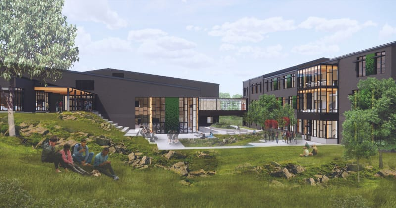

Anthony Faldetta
Demo concepts, thesis refinement, and project website.
Exploring how AI can help concrete flooring subcontractors find answers, reduce unnecessary RFIs, and coordinate work after unexpected construction disruptions.
AI-assisted documentation and information retrieval can improve communication between subcontractors and general contractors, reduce unnecessary Requests for Information, and support more effective task coordination.
Decisions, deadlines, and responsibilities are scattered across meeting notes, daily reports, and schedules. Subcontractors may repeat questions, miss updates, or plan work using outdated information.
A Request for Information (RFI) formally asks for clarification. Our focus is on avoidable requests whose answers already exist in the project record. Necessary RFIs remain part of the process.

In May 2024, vandalism caused significant water damage at the construction site. The team’s case study follows the resulting repair work, including removal of concrete flooring, restoration of affected areas, and efforts to recover lost time.
Read the change-order record ↗The incident and related change order provide the real-world context. Internal communications and RFI counts were not available to the team.
Increased RFIs, repair coordination challenges, and specific scheduling conflicts are scenario assumptions, not documented outcomes from Evergreen.
We take the subcontractor’s perspective: what has changed, who is responsible, and what needs clarification before work can proceed?
Bring together meeting notes, daily reports, schedules, and relevant change orders.
Use AI to extract decisions, link source information, and flag missing or conflicting details.
People verify findings, approve updates, and submit a formal RFI when clarification is still needed.
| Party | Responsibility in the scenario |
|---|---|
| Concrete flooring subcontractor Our team’s role | Complete repair tasks, document progress, and raise questions about scope, dependencies, and deadlines. |
| General contractor | Coordinate trades and schedules, review issues, and communicate with the design team and owner. |
| Design team | Clarify plans and specifications and address design questions arising from the repairs. |
| Project owner | Oversee project requirements, make major decisions, and approve applicable changes. |
Primary artifacts: RFIs, meeting notes, daily reports, change orders, and schedules. Submittals and inspection records may provide supporting references.
Planned tests using synthetic construction records. Open each experiment for its scenario, comparison, and success measures.
After the water damage, contractors meet to discuss repairs and new deadlines. An AI agent reads a synthetic transcript and extracts decisions, owners, due dates, and unresolved questions.
Check the AI summary against reference notes and manually prepared meeting summaries.
Correct action items · Missing details · Summary preparation time
Flooring crews submit daily reports on completed repairs, complications, and outstanding work. An AI agent identifies delays, conflicting updates, and issues other contractors need to know about.
Compare findings with a predefined list of issues deliberately included in the synthetic reports.
Relevant issues identified (%) · Missed issues · Report review time
Subcontractors ask about materials, responsibilities, repair procedures, and deadlines. The AI searches meeting notes, reports, and schedules, then returns a supported answer or flags the need for a formal RFI.
Compare RFI counts with and without AI assistance. Check each answer against the source records and reference answer.
Unnecessary RFIs avoided · Correctly answered questions (%) · Questions incorrectly marked as resolved
Removing and replacing damaged flooring introduces new tasks and dependencies. The AI combines meeting notes, reports, and schedules to suggest priorities, assignments, and revised deadlines.
Assess AI-assisted proposals against manually prepared schedules for conflicts and overlooked responsibilities.
Scheduling conflicts identified · Missed task dependencies · Schedule preparation time
Construction updates, bidding information, and change orders ground the project in Evergreen’s documented circumstances. They do not provide the internal records needed to reconstruct actual subcontractor coordination.
We plan to create fictional meeting transcripts, daily reports, schedules, and subcontractor questions around the same repair scenario. Known information gaps, unresolved questions, and scheduling conflicts will provide reference answers for evaluation.
Compare AI outputs with reference answers and human-prepared work where feasible. Synthetic data cannot capture the full complexity of a live construction project. No performance results or numerical improvement targets are established in this proposal.
Our team studies information flow from the perspective of concrete flooring subcontractors.
Demo concepts, thesis refinement, and project website.
Initial thesis draft, construction site selection and research, and slide development.
Thesis brainstorming and refinement, potential datasets, and reference research.
Team member. Individual contribution statement not yet included in the project materials.
The website consolidates the final proposal and planned demos. Original files retain the team’s drafts and supporting material.